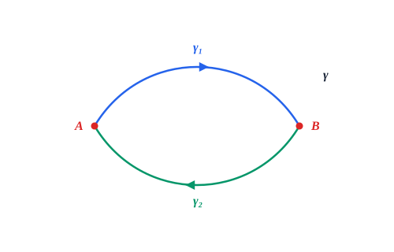
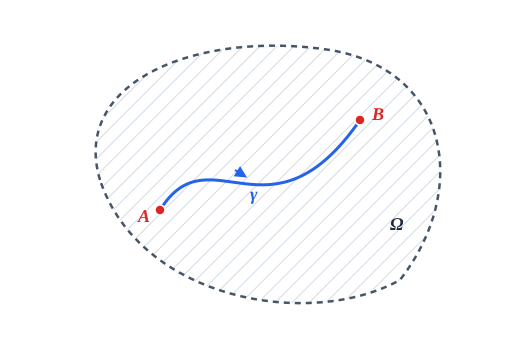
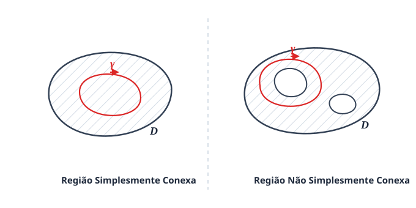
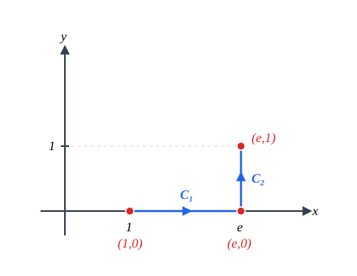

Seção2.3O Teorema Fundamental para Integrais de Linha
Inicialmente, lembre que um campo vetorial \(\vec{F}: \mathbb{R}^n \rightarrow \mathbb{R}^n\) é dito conservativo quando existe um campo escalar \(\varphi: \mathbb{R}^n \rightarrow \mathbb{R}\) tal que \(\nabla\varphi = \vec{F}\text{.}\)
Teorema2.3.1.Teorema Fundamental das Integrais de Linha.
Se \(\vec{F}: D \subseteq \mathbb{R}^n \rightarrow \mathbb{R}^n\) é um campo vetorial contínuo, se \(\varphi: D \subseteq \mathbb{R}^n \rightarrow \mathbb{R}\) é tal que \(\nabla\varphi = \vec{F}\) e se \(\gamma: [a,b] \rightarrow \mathbb{R}^n\) é uma curva de classe \(C^1\) com \(\gamma(a) = A\) e \(\gamma(b) = B\text{,}\) então:
O teorema acima nos diz que a integral de linha de um campo conservativo sobre uma curva suave \(\gamma: [a,b] \rightarrow \mathbb{R}^n\) depende apenas dos pontos extremos do intervalo, ou seja, de \(\gamma(a)\) e \(\gamma(b)\text{.}\)
Exemplo2.3.3.
Calcule \(\int_{\gamma} x \, dx + y \, dy\text{,}\) onde \(\gamma(t) = (\arctan t, \text{sen}(t^3))\text{,}\)\(0 \le t \le 1\text{.}\)
Note que se calcularmos diretamente pela definição, faríamos:
\begin{align*}
x = \arctan t \amp \implies dx = \frac{1}{1+t^2} \, dt\\
y = \text{sen}(t^3) \amp \implies dy = 3t^2 \cos(t^3) \, dt
\end{align*}
Obtendo \(\int_{0}^{1} \left( \frac{\arctan t}{1+t^2} + 3t^2 \text{sen}(t^3)\cos(t^3) \right) dt\text{.}\) Embora essas integrais não sejam impossíveis, elas exigem bastante trabalho algebraico.
Por outro lado, note que \(\varphi(x,y) = \frac{x^2+y^2}{2}\) é tal que \(\frac{\partial\varphi}{\partial x} = x\) e \(\frac{\partial\varphi}{\partial y} = y\text{,}\) isto é, \(\varphi\) é uma função potencial para o campo \(\vec{F} = x\vec{i} + y\vec{j}\text{.}\)
Assim, usando o Teorema Fundamental das Integrais de Linha:
Subseção2.3.1Independência do Caminho e Curvas Fechadas
Definição2.3.4.
Diremos que a integral de linha \(\int_C \vec{F} \cdot d\vec{r}\) é independente do caminho quando \(\int_{C_1} \vec{F} \cdot d\vec{r} = \int_{C_2} \vec{F} \cdot d\vec{r}\) para quaisquer dois caminhos \(C_1\) e \(C_2\) que tenham os mesmos pontos inicial e final.
Nesta terminologia, pelo Teorema Fundamental, para calcular a integral de um campo conservativo precisamos apenas dos pontos extremos da curva. Logo, concluímos que a integral de linha de um campo conservativo é independente do caminho.
Exemplo2.3.5.
Considere o campo conservativo \(\vec{F}(x,y) = (e^{-y} - 2x)\vec{i} + (-x e^{-y} - \text{sen } y)\vec{j}\text{.}\) Calcule \(\int_C \vec{F} \cdot d\vec{r}\text{,}\) onde \(C\) é uma curva qualquer \(C^1\) por partes ligando \(A = (\pi, 0)\) até \(B = (0, \pi)\text{.}\)
Uma curva \(\gamma\) é dita fechada quando seus pontos extremos coincidem, ou seja, \(\gamma(a) = \gamma(b)\text{.}\)
Teorema2.3.6.
A integral de linha \(\int_{\gamma} \vec{F} \cdot d\vec{r}\) é independente do caminho se, e somente se, \(\int_{\gamma} \vec{F} \cdot d\vec{r} = 0\) para toda curva \(\gamma\) fechada.
(\(\implies\)) Seja \(\vec{F}: D \subseteq \mathbb{R}^n \rightarrow \mathbb{R}^n\) um campo vetorial tal que \(\int_C \vec{F} \cdot d\vec{r}\) seja independente do caminho para quaisquer curvas ligando os pontos \(A\) até \(B\text{.}\)

Figura2.3.7.Decomposição de uma curva fechada \(\gamma\) em dois caminhos \(\gamma_1\) e \(\gamma_2\)
Seja \(\gamma\) uma curva qualquer \(C^1\) fechada contendo os pontos \(A\) e \(B\text{.}\) Podemos ver \(\gamma\) composta por dois caminhos: \(\gamma_1\) de \(A\) para \(B\text{,}\) e \(\gamma_2\) de \(B\) para \(A\text{.}\) Assim:
Note que \(\int_{\gamma_2} \vec{F} \cdot d\vec{r} = -\int_{-\gamma_2} \vec{F} \cdot d\vec{r}\text{,}\) onde \(-\gamma_2\) é a curva percorrida no sentido contrário (de \(A\) para \(B\)). Logo:
pois \(\gamma_1\) e \(-\gamma_2\) têm os mesmos pontos inicial e final e a integral é independente do caminho.
(\(\impliedby\)) Agora, suponha que \(\int_{\gamma} \vec{F} \cdot d\vec{r} = 0\) para toda curva fechada \(\gamma\text{.}\) Sejam \(C_1\) e \(C_2\) duas curvas quaisquer ligando \(A\) até \(B\text{.}\)
Note que a curva composta \(\gamma = C_1 \cup (-C_2)\) é fechada. Logo:
Subseção2.3.2Critérios de Conservatividade em Domínios Abertos e Conexos
Se o domínio do campo \(\vec{F}: \Omega \subset \mathbb{R}^n \rightarrow \mathbb{R}^n\) for "bem comportado", a independência do caminho implica que \(\vec{F}\) é conservativo.

Figura2.3.8.Região aberta e conexa por caminhos \(\Omega\)
Aqui, "bem comportado" significa que \(\Omega\) é um conjunto:
Aberto: Todo ponto de \(\Omega\) pode ser colocado no centro de uma bola totalmente contida em \(\Omega\) (não contém pontos de fronteira).
Conexo por caminhos: Quaisquer dois pontos em \(\Omega\) podem ser ligados por um caminho totalmente contido em \(\Omega\text{.}\)
Teorema2.3.9.
Se \(\vec{F}\) for um campo vetorial contínuo em uma região aberta e conexa por caminhos \(\Omega \subseteq \mathbb{R}^n\text{,}\) e se \(\int_C \vec{F} \cdot d\vec{r}\) for independente do caminho, então \(\vec{F}\) é conservativo em \(\Omega\text{.}\)
Denote por \(\vec{e}_i = (0, \dots, 0, 1, 0, \dots, 0)\) o vetor da base canônica com \(1\) na \(i\)-ésima posição. Assim, \(\vec{F}(x_1, \dots, x_n) = \sum_{i=1}^{n} f_i(x_1, \dots, x_n)\vec{e}_i\text{.}\)
Seja \(A \in \Omega\) fixado. Para cada ponto \(X = (x_1, \dots, x_n) \in \Omega\text{,}\) defina a função candidato a potencial:
A notação \(\int_A^X\) é adequada pois a integral é independente do caminho escolhido ligando \(A\) a \(X\text{.}\)
Vamos provar que \(\frac{\partial\varphi}{\partial x_i} = f_i\) para todo \(i = 1, \dots, n\text{.}\) Como \(\Omega\) é aberto, para \(X \in \Omega\) existe uma bola de centro \(X\) contida em \(\Omega\text{.}\) Considere \(h > 0\) suficientemente pequeno tal que o segmento ligando \(X\) a \(X + h\vec{e}_i\) esteja contido nessa bola.
Uma parametrização do segmento de \(X\) a \(X + h\vec{e}_i\) é \(\gamma(t) = X + t\vec{e}_i\text{,}\)\(t \in [0, h]\text{.}\) Daí, \(\gamma'(t) = \vec{e}_i\text{,}\) e:
Mostrando que \(\nabla\varphi(X) = \vec{F}(X)\) para todo \(X \in \Omega\text{.}\)
Teorema2.3.10.Teorema de Equivalências.
Seja \(\vec{F}: \Omega \subseteq \mathbb{R}^n \rightarrow \mathbb{R}^n\) um campo vetorial contínuo no aberto conexo por caminhos \(\Omega\text{.}\) São equivalentes as seguintes afirmações:
\(\vec{F}\) é conservativo em \(\Omega\text{.}\)
\(\int_{\gamma} \vec{F} \cdot d\vec{r} = 0\) para toda curva \(\gamma\) fechada, \(C^1\) por partes em \(\Omega\text{.}\)
\(\int_{\gamma} \vec{F} \cdot d\vec{r}\) é independente do caminho de integração em \(\Omega\text{.}\)
Subseção2.3.3Teste para Campos Conservativos em Regiões Simplesmente Conexas
Se \(\vec{F}(x,y) = P(x,y)\vec{i} + Q(x,y)\vec{j}\) é conservativo, existe \(\varphi: \mathbb{R}^2 \rightarrow \mathbb{R}\) tal que \(\frac{\partial\varphi}{\partial x} = P\) e \(\frac{\partial\varphi}{\partial y} = Q\text{.}\)
Supondo \(\vec{F}\) de classe \(C^1\text{,}\) segue pelo Teorema das Derivadas Cruzadas (Clairaut-Schwarz) que \(\varphi\) é de classe \(C^2\text{:}\)
Teste Necessário: Se \(\vec{F} = P\vec{i} + Q\vec{j}\) é um campo de classe \(C^1\) e \(\vec{F}\) é conservativo, então obrigatoriamente \(\frac{\partial P}{\partial y} = \frac{\partial Q}{\partial x}\text{.}\)
Contrapositiva: Se \(\frac{\partial P}{\partial y} \neq \frac{\partial Q}{\partial x}\text{,}\) então o campo \(\vec{F}\) não é conservativo.
Como \(\frac{\partial P}{\partial y} \neq \frac{\partial Q}{\partial x}\text{,}\) logo \(\vec{F}\) não é conservativo.
A recíproca vale? A condição \(\frac{\partial P}{\partial y} = \frac{\partial Q}{\partial x}\) garante que \(\vec{F}\) é conservativo apenas em domínios sem "furos".
Definição2.3.13.
Uma curva \(\gamma(t)\text{,}\)\(a \le t \le b\text{,}\) é dita fechada simples quando \(\gamma(a) = \gamma(b)\) e não existem auto-interseções no intervalo aberto \((a,b)\text{.}\)
Uma região \(D \subseteq \mathbb{R}^2\) aberta e conexa por caminhos é dita simplesmente conexa quando toda curva fechada simples em \(D\) delimita uma região totalmente contida em \(D\text{.}\)

Figura2.3.14.Comparação entre região simplesmente conexa e região com furos interiores
Teorema2.3.15.
Seja \(\vec{F} = P\vec{i} + Q\vec{j}\) um campo vetorial em uma região aberta simplesmente conexa \(D\text{.}\) Suponha que \(P\) e \(Q\) tenham derivadas parciais de primeira ordem contínuas em todo \(D\) e que:
a) Verificação de conservatividade: O domínio de \(\vec{F}\) é todo o plano \(\mathbb{R}^2\text{,}\) que é aberto e simplesmente conexo. Sendo \(P(x,y) = 3 + 2xy\) e \(Q(x,y) = x^2 - 3y^2\text{,}\) temos:
Como \(\vec{F}\) é conservativo, a integral não depende do caminho entre \((1,0)\) e \((e,1)\text{.}\) Escolhemos a poligonal \(C_1 \cup C_2\) unindo \((1,0)\) a \((e,0)\) e \((e,0)\) a \((e,1)\text{:}\)

Figura2.3.18.Poligonal de integração unindo \((1,0)\) a \((e,1)\)
\(C_1(t) = (t, 0)\text{,}\)\(1 \le t \le e \implies C_1'(t) = (1, 0)\)
Mostre que a integral de linha é independente do caminho e calcule seu valor:
\(\int_{C} \tan(y) \, dx + x\sec^2(y) \, dy\text{,}\) de \((1,0)\) a \(\left(2, \frac{\pi}{4}\right)\text{.}\)
\(\int_{C} (1 - y e^{-x}) \, dx + e^{-x} \, dy\text{,}\) de \((0,1)\) a \((1,2)\text{.}\)
3.
Seja \(f: \mathbb{R} \to \mathbb{R}\) contínua e considere o campo central \(\vec{F}(\vec{r}) = f(\|\vec{r}\|)\frac{\vec{r}}{\|\vec{r}\|}\text{.}\) Prove que \(\vec{F}\) é conservativo em \(\mathbb{R}^3 \setminus \{(0,0,0)\}\text{.}\)
4.
Mostre que se \(\vec{F} = P\vec{i} + Q\vec{j} + R\vec{k}\) é conservativo e \(C^1\text{,}\) então \(\frac{\partial P}{\partial y} = \frac{\partial Q}{\partial x}\text{,}\)\(\frac{\partial P}{\partial z} = \frac{\partial R}{\partial x}\) e \(\frac{\partial Q}{\partial z} = \frac{\partial R}{\partial y}\text{.}\) Mostre ainda que a integral \(\int_{C} y \, dx + x \, dy + xyz \, dz\) não é independente do caminho.
5.
Seja o campo vetorial \(\vec{F}(x,y) = \frac{-y\vec{i} + x\vec{j}}{x^2 + y^2}\text{.}\)
Mostre que \(\frac{\partial P}{\partial y} = \frac{\partial Q}{\partial x}\) em todo o seu domínio \(\mathbb{R}^2 \setminus \{(0,0)\}\text{.}\)
Calcule \(\int_{C_1}\vec{F}\cdot d\vec{r}\) e \(\int_{C_2}\vec{F}\cdot d\vec{r}\text{,}\) onde \(C_1\) e \(C_2\) são os semicírculos superior e inferior de \(x^2 + y^2 = 1\) de \((1,0)\) a \((-1,0)\text{.}\) Existe contradição com o item (a)?